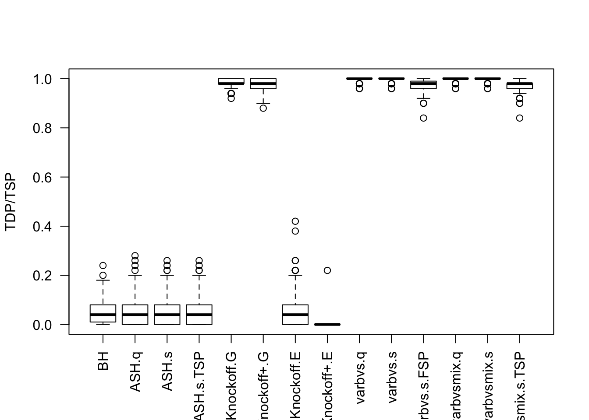

Last updated: 2018-05-15
workflowr checks: (Click a bullet for more information) ✔ R Markdown file: up-to-date
Great! Since the R Markdown file has been committed to the Git repository, you know the exact version of the code that produced these results.
✔ Environment: empty
Great job! The global environment was empty. Objects defined in the global environment can affect the analysis in your R Markdown file in unknown ways. For reproduciblity it’s best to always run the code in an empty environment.
✔ Seed:
set.seed(12345)
The command set.seed(12345) was run prior to running the code in the R Markdown file. Setting a seed ensures that any results that rely on randomness, e.g. subsampling or permutations, are reproducible.
✔ Session information: recorded
Great job! Recording the operating system, R version, and package versions is critical for reproducibility.
✔ Repository version: 388e65e
wflow_publish or wflow_git_commit). workflowr only checks the R Markdown file, but you know if there are other scripts or data files that it depends on. Below is the status of the Git repository when the results were generated:
Ignored files:
Ignored: .DS_Store
Ignored: .Rhistory
Ignored: .Rproj.user/
Ignored: analysis/.DS_Store
Ignored: analysis/BH_robustness_cache/
Ignored: analysis/FDR_Null_cache/
Ignored: analysis/FDR_null_betahat_cache/
Ignored: analysis/Rmosek_cache/
Ignored: analysis/StepDown_cache/
Ignored: analysis/alternative2_cache/
Ignored: analysis/alternative_cache/
Ignored: analysis/ash_gd_cache/
Ignored: analysis/average_cor_gtex_2_cache/
Ignored: analysis/average_cor_gtex_cache/
Ignored: analysis/brca_cache/
Ignored: analysis/cash_deconv_cache/
Ignored: analysis/cash_fdr_1_cache/
Ignored: analysis/cash_fdr_2_cache/
Ignored: analysis/cash_fdr_3_cache/
Ignored: analysis/cash_fdr_4_cache/
Ignored: analysis/cash_fdr_5_cache/
Ignored: analysis/cash_fdr_6_cache/
Ignored: analysis/cash_plots_cache/
Ignored: analysis/cash_sim_1_cache/
Ignored: analysis/cash_sim_2_cache/
Ignored: analysis/cash_sim_3_cache/
Ignored: analysis/cash_sim_4_cache/
Ignored: analysis/cash_sim_5_cache/
Ignored: analysis/cash_sim_6_cache/
Ignored: analysis/cash_sim_7_cache/
Ignored: analysis/correlated_z_2_cache/
Ignored: analysis/correlated_z_3_cache/
Ignored: analysis/correlated_z_cache/
Ignored: analysis/create_null_cache/
Ignored: analysis/cutoff_null_cache/
Ignored: analysis/design_matrix_2_cache/
Ignored: analysis/design_matrix_cache/
Ignored: analysis/diagnostic_ash_cache/
Ignored: analysis/diagnostic_correlated_z_2_cache/
Ignored: analysis/diagnostic_correlated_z_3_cache/
Ignored: analysis/diagnostic_correlated_z_cache/
Ignored: analysis/diagnostic_plot_2_cache/
Ignored: analysis/diagnostic_plot_cache/
Ignored: analysis/efron_leukemia_cache/
Ignored: analysis/fitting_normal_cache/
Ignored: analysis/gaussian_derivatives_2_cache/
Ignored: analysis/gaussian_derivatives_3_cache/
Ignored: analysis/gaussian_derivatives_4_cache/
Ignored: analysis/gaussian_derivatives_5_cache/
Ignored: analysis/gaussian_derivatives_cache/
Ignored: analysis/gd-ash_cache/
Ignored: analysis/gd_delta_cache/
Ignored: analysis/gd_lik_2_cache/
Ignored: analysis/gd_lik_cache/
Ignored: analysis/gd_w_cache/
Ignored: analysis/knockoff_10_cache/
Ignored: analysis/knockoff_2_cache/
Ignored: analysis/knockoff_3_cache/
Ignored: analysis/knockoff_4_cache/
Ignored: analysis/knockoff_5_cache/
Ignored: analysis/knockoff_6_cache/
Ignored: analysis/knockoff_7_cache/
Ignored: analysis/knockoff_8_cache/
Ignored: analysis/knockoff_9_cache/
Ignored: analysis/knockoff_cache/
Ignored: analysis/knockoff_var_cache/
Ignored: analysis/marginal_z_alternative_cache/
Ignored: analysis/marginal_z_cache/
Ignored: analysis/mosek_reg_2_cache/
Ignored: analysis/mosek_reg_4_cache/
Ignored: analysis/mosek_reg_5_cache/
Ignored: analysis/mosek_reg_6_cache/
Ignored: analysis/mosek_reg_cache/
Ignored: analysis/pihat0_null_cache/
Ignored: analysis/plot_diagnostic_cache/
Ignored: analysis/poster_obayes17_cache/
Ignored: analysis/real_data_simulation_2_cache/
Ignored: analysis/real_data_simulation_3_cache/
Ignored: analysis/real_data_simulation_4_cache/
Ignored: analysis/real_data_simulation_5_cache/
Ignored: analysis/real_data_simulation_cache/
Ignored: analysis/rmosek_primal_dual_2_cache/
Ignored: analysis/rmosek_primal_dual_cache/
Ignored: analysis/seqgendiff_cache/
Ignored: analysis/simulated_correlated_null_2_cache/
Ignored: analysis/simulated_correlated_null_3_cache/
Ignored: analysis/simulated_correlated_null_cache/
Ignored: analysis/simulation_real_se_2_cache/
Ignored: analysis/simulation_real_se_cache/
Ignored: analysis/smemo_2_cache/
Ignored: data/LSI/
Ignored: docs/.DS_Store
Ignored: docs/figure/.DS_Store
Ignored: output/fig/
| File | Version | Author | Date | Message |
|---|---|---|---|---|
| html | e05bc83 | LSun | 2018-05-12 | Update to 1.0 |
| rmd | cc0ab83 | Lei Sun | 2018-05-11 | update |
| html | 433a193 | LSun | 2018-04-16 | Build site. |
| rmd | fb08738 | Lei Sun | 2018-04-15 | bugs |
| html | 6567381 | LSun | 2018-04-14 | Build site. |
| rmd | e10239b | LSun | 2018-04-14 | wflow_publish(“analysis/knockoff_10.rmd”) |
| rmd | c991e63 | Lei Sun | 2018-04-13 | s value |
| rmd | 7bfba65 | Lei Sun | 2018-04-13 | s value |
| html | 409b0d6 | LSun | 2018-04-13 | Build site. |
| rmd | ad38d00 | LSun | 2018-04-13 | wflow_publish(“analysis/knockoff_10.rmd”) |
| html | dde3c2f | LSun | 2018-04-12 | Build site. |
| rmd | f1c347f | LSun | 2018-04-12 | wflow_publish(“analysis/knockoff_10.rmd”) |
| html | 5c8e711 | LSun | 2018-04-11 | Build site. |
| rmd | 2627a7e | Lei Sun | 2018-04-10 | high dimensional |
| html | d6420e1 | LSun | 2018-04-10 | Build site. |
| rmd | 22c15a5 | Lei Sun | 2018-04-10 | knockoff vs bayesian |
varbvs.get.lfsr <- function (fit) {
# For each variable, and each hyperparameter setting, get the
# posterior probability that the regression coefficient is exactly
# zero.
p0 <- 1 - fit$alpha
# For each variable, and for each hyperparameter setting, get the
# posterior probability that the regression coefficient is negative.
pn <- with(fit,alpha * pnorm(0,mu,sqrt(s)))
# For each variable, and for each hyperparameter setting, ompute the
# local false sign rate (LFSR) following the formula given in
# Matthew's Biostatistics paper, "False discovery rates: a new deal".
p <- nrow(fit$alpha)
k <- ncol(fit$alpha)
lfsr <- matrix(0,p,k)
b <- pn > 0.5*(1 - p0)
lfsr[b] <- 1 - pn[b]
lfsr[!b] <- p0[!b] + pn[!b]
# Average the average LFSR over the hyperparameter settings, weighted
# by the probability of each hyperparameter setting.
lfsr <- c(lfsr %*% fit$w)
return(lfsr)
}n <- 1200
p <- 1000
k <- 50
m <- 100
q <- 0.1\(X_{n \times p}\) has independent columns simulated from \(N(0, (1/\sqrt n)^2)\) so they are roughly normalized.
Cov.X <- diag(1 / n, p)| Version | Author | Date |
|---|---|---|
| 433a193 | LSun | 2018-04-16 |
| Version | Author | Date |
|---|---|---|
| 433a193 | LSun | 2018-04-16 |
\(X_{n \times p}\) has correlation \(\Sigma_{ij} = \rho^{|i - j|}\). Each row is independently \(N(0, \frac1n\Sigma)\).
| Version | Author | Date |
|---|---|---|
| 433a193 | LSun | 2018-04-16 |

| Version | Author | Date |
|---|---|---|
| 433a193 | LSun | 2018-04-16 |
n <- 300
p <- 1000
k <- 50
m <- 100
q <- 0.1Cov.X <- diag(1 / n, p)sessionInfo()R version 3.4.3 (2017-11-30)
Platform: x86_64-apple-darwin15.6.0 (64-bit)
Running under: macOS High Sierra 10.13.4
Matrix products: default
BLAS: /Library/Frameworks/R.framework/Versions/3.4/Resources/lib/libRblas.0.dylib
LAPACK: /Library/Frameworks/R.framework/Versions/3.4/Resources/lib/libRlapack.dylib
locale:
[1] en_US.UTF-8/en_US.UTF-8/en_US.UTF-8/C/en_US.UTF-8/en_US.UTF-8
attached base packages:
[1] parallel stats graphics grDevices utils datasets methods
[8] base
other attached packages:
[1] lattice_0.20-35 doMC_1.3.5 iterators_1.0.9 foreach_1.4.4
[5] ggplot2_2.2.1 reshape2_1.4.3 Matrix_1.2-12 varbvs_2.5-2
[9] knockoff_0.3.0
loaded via a namespace (and not attached):
[1] Rcpp_0.12.16 compiler_3.4.3 pillar_1.0.1
[4] RColorBrewer_1.1-2 git2r_0.21.0 plyr_1.8.4
[7] workflowr_1.0.1 R.methodsS3_1.7.1 R.utils_2.6.0
[10] tools_3.4.3 digest_0.6.15 evaluate_0.10.1
[13] tibble_1.4.1 gtable_0.2.0 rlang_0.1.6
[16] yaml_2.1.18 stringr_1.3.0 knitr_1.20
[19] rprojroot_1.3-2 grid_3.4.3 rmarkdown_1.9
[22] latticeExtra_0.6-28 magrittr_1.5 whisker_0.3-2
[25] codetools_0.2-15 backports_1.1.2 scales_0.5.0
[28] htmltools_0.3.6 colorspace_1.3-2 nor1mix_1.2-3
[31] stringi_1.1.6 lazyeval_0.2.1 munsell_0.4.3
[34] R.oo_1.21.0 This reproducible R Markdown analysis was created with workflowr 1.0.1